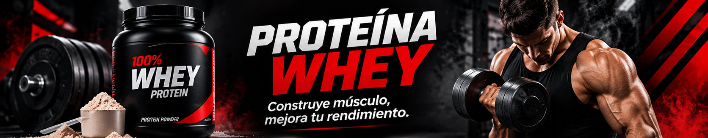

NUTRICIÓN DEPORTIVA
Descubre la importancia de una alimentación equilibrada para cuidar tu salud y acompañar tu actividad física.

¿QUÉ ES LA NUTRICIÓN?
La nutrición es el proceso mediante el cual nuestro organismo obtiene y utiliza los nutrientes necesarios para funcionar correctamente. Una alimentación variada ayuda a mantener el bienestar y la salud.
TIPOS DE NUTRIENTES
Conoce algunos nutrientes importantes para el organismo.
PROTEÍNAS
Ayudan al crecimiento y mantenimiento de los tejidos del cuerpo.
CARBOHIDRATOS
Son una fuente importante de energía para realizar nuestras actividades.
GRASAS SALUDABLES
Participan en diferentes funciones importantes del organismo.
VITAMINAS Y MINERALES
Contribuyen al funcionamiento adecuado del organismo.
SUPLEMENTOS DEPORTIVOS
Los suplementos deportivos son productos que pueden complementar la alimentación. No reemplazan una dieta variada ni son necesarios para todas las personas.

PROTEÍNA WHEY
Producto elaborado a partir del suero de leche.

CREATINA
Compuesto que participa en la producción de energía muscular.
Antes de utilizar suplementos, es importante consultar con un profesional de salud.